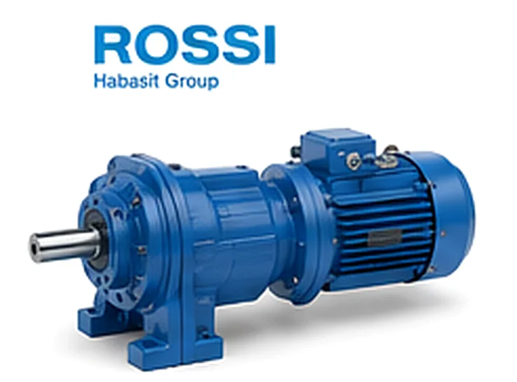

Rossi ECFT 070/146под заказ
Rossi ECFT 070/146под заказплоско-цилиндрический · ИталияRossi ECFT 070/146наш аналог ZR 676/939
0,1–0,8 кВтi 28–2613
Цена: по запросуПодробнее →
Редукторы Росси. Поставляем оригинальные редукторы и мотор-редукторы Rossi под заказ, а также аналог собственного производства — дешевле оригинала, с заменой по присоединительным размерам. Цену и срок уточняем по запросу. Кириллическое написание — Росси; в каталогах и счетах попадаются оба варианта. Отгружаем со склада в Челябинске и под заказ транспортными компаниями — Москву, Санкт-Петербург, Екатеринбург, Казань, Самару, Ростов-на-Дону, Краснодар, Воронеж, Тулу и Ульяновск, и дальше по России.

Задайте диапазоны параметров — мощность, обороты на выходе, момент, передаточное число — и таблица покажет наши типоразмеры ZR как замену приводов Rossi. Точную замену по вашей модели или шильдику подтвердит инженер.
Rossi ECFT 070/146под заказ Rossi MR 0, MR1, MR2, MR 3под заказRossi MR 125, RV 125/126, R I 125под заказRossi MR 140, RV 160/161, R I 140под заказRossi MR 180, RV 200, R I 180под заказRossi MR 200, R I 200под заказRossi MR 250, R I 225, R I 250под заказRossi MR 63, MR 64, R 2I 50, R I 63под заказRossi MR 7под заказRossi MR 80, R I 63, R I 80под заказRossi MR 81под заказRossi MR5, MR 6под заказ
Rossi MR 0, MR1, MR2, MR 3под заказRossi MR 125, RV 125/126, R I 125под заказRossi MR 140, RV 160/161, R I 140под заказRossi MR 180, RV 200, R I 180под заказRossi MR 200, R I 200под заказRossi MR 250, R I 225, R I 250под заказRossi MR 63, MR 64, R 2I 50, R I 63под заказRossi MR 7под заказRossi MR 80, R I 63, R I 80под заказRossi MR 81под заказRossi MR5, MR 6под заказ Rossi MRV 225, MRV 325под заказRossi MRV 742под заказRossi R I 100под заказRossi RV 100, MRV 100под заказRossi RV 32, MRV 32, MRV 118под заказRossi RV 50, MRV 50, MRV 430под заказRossi RV 80, MRV 80, MRV 535под заказ
Rossi MRV 225, MRV 325под заказRossi MRV 742под заказRossi R I 100под заказRossi RV 100, MRV 100под заказRossi RV 32, MRV 32, MRV 118под заказRossi RV 50, MRV 50, MRV 430под заказRossi RV 80, MRV 80, MRV 535под заказПоставляем оригинальные редукторы, мотор-редукторы и вариаторы Rossi под заказ — по серии и типоразмеру с вашего шильда или чертежа. Ниже основные серии Rossi; точную модель и комплектацию подтвердит инженер.
| Серия | Типоразмеры |
|---|---|
| MR V / RV — червячные | MR V 32, 50, 80, 100, 118, 225, 325, 430, 535, 742 |
| MR 0 — MR 7 — соосно-цилиндрические | MR 0, MR 1, MR 2, MR 3, MR 5, MR 6, MR 7 |
| MR / R I / R 2I — плоско-цилиндрические | 63, 64, 80, 81, 125, 140, 180, 200, 225, 250 |
| ECFT — коническо-цилиндрические | ECFT 070/146 |
| Цена и наличие оригинала — по запросу. Не оферта. | |
Заменяем червячные мотор-редукторы Rossi на аналоги собственного производства (серии Ч, 2Ч, МЧ, МЧ2). Узел встаёт на штатное место по присоединительным и габаритным размерам — переходные фланцы и спецвалы изготавливаем по вашим чертежам.

| Заменяем серии Rossi | MR, MR V, R I, R 2I, RV, ECFT |
|---|---|
| Мощность двигателя | 0.06–30 кВт |
| Передаточное число | 3.77–3120 |
| Наш аналог | Редукторы серии ZR (червячные, плоские цилиндрические, соосные, конические) |
| Гарантия | 24 месяца |
| Срок | Отгрузка со склада от 3 дней, изготовление от 5 рабочих дней |
Совпадают присоединительные размеры, валы и фланцы — узел встаёт на штатное место.
Вдвое выше среднерыночной.
Отгрузка со склада от 3 дней — не ждать импорт месяцами.
Пришлите фото шильда или модель — подберём замену за 15 минут.
Подбор по типоразмеру: каждой модели Rossi соответствует наш редуктор серии ZR. Точную замену по вашей модели или шильду подтвердит инженер — пришлите шильд или опишите задачу.
| Модель Rossi | Наш аналог |
|---|---|
| Червячные редукторы и мотор-редукторы | |
| MR V 32, MR V 118, RV 32 | ZR 604 |
| MR V 225, MR V 325 | ZR 606 |
| MR V 50, MR V 430, RV 50 | ZR 607 |
| MR V 80, MR V 535, RV 80 | ZR 609 |
| MR V 742 | ZR 6010 |
| MR V 100, RV 100 | ZR 6013 |
| Соосно-цилиндрические мотор-редукторы | |
| MR 0, MR 1, MR 2, MR 3 | ZR 939 |
| MR 5, MR 6 | ZR 959 |
| MR 7 | ZR 979 |
| Плоско-цилиндрические (параллельно-осевые) редукторы | |
| MR 63, MR 64, R I 63, R 2I 50 | ZR 636 |
| MR 80, R I 80 | ZR 646 |
| MR 81 | ZR 666 |
| R I 100 | ZR 676 |
| MR 125, R I 125, RV 125/126 | ZR 686 |
| MR 140, R I 140, RV 160/161 | ZR 696 |
| MR 180, R I 180, RV 200 | ZR 6106 |
| MR 200, R I 200 | ZR 6126 |
| MR 250, R I 225, R I 250 | ZR 6156 |
| Коническо-цилиндрические | |
| ECFT 070/146 | ZR 676/939 |
Оставьте контакты или пришлите модель/шильд — инженер подберёт аналог, рассчитает присоединительные размеры и пришлёт КП.
Получить КПВсе статьи о редукторах →·Габаритные и присоединительные чертежи Rossi →
Да, это одно и то же. Rossi — латинское написание, Росси — то же название кириллицей; в российских спецификациях, счетах и заявках встречаются оба варианта, и обозначения моделей от этого не меняются. Пришлите обозначение с шильда в любом написании — инженер определит серию и типоразмер и подберёт либо оригинал под заказ, либо наш аналог серии ZR с теми же присоединительными размерами.
Да, поставляем оригинальные редукторы, мотор-редукторы и вариаторы Rossi под заказ — по серии и типоразмеру с вашего шильда или чертежа. Срок поставки оригинала зависит от серии и наличия у производителя; точные сроки и условия подтверждает инженер по запросу.
Аналог собственного производства повторяет присоединительные и габаритные размеры червячных серий RS, RT, FRS, FRT — узел встаёт на штатное место. Он обходится дешевле оригинала и отгружается быстрее, при этом сохраняет передаточное число и монтажное исполнение. Переходные фланцы и спецвалы изготавливаем по вашим чертежам.
Пришлите фото шильда или укажите модель Rossi (серию и типоразмер) — инженер подберёт оригинал под заказ или аналог серии ZR по присоединительным размерам, мощности и передаточному числу. Подбор по шильду занимает около 15 минут.
Цена на оригинал Rossi и на аналог собственного производства рассчитывается индивидуально и предоставляется по запросу. Стоимость зависит от серии, типоразмера, комплектации и срочности. Оставьте заявку — пришлём коммерческое предложение.
Габаритный аналог изготавливаем от 3 дней со склада или под заказ. Оригинал Rossi поставляем под заказ — срок зависит от модели и наличия, точные сроки сообщим при запросе.
Да, мотор-редукторы рассчитаны на работу с частотным преобразователем. Сообщите требуемый диапазон регулирования оборотов — подберём двигатель и комплектацию.
Передаём паспорт изделия, сертификаты и закрывающие документы — счёт-фактуру или УПД. Работаем по договору; для постоянных и серийных клиентов согласуем индивидуальные условия.
Да. Для производителей оборудования делаем серийные поставки с резервом на складе и фиксированной ценой по договору — приводная часть вашей серии всегда в наличии.
Rossi купить с поставкой оригинала под заказ и аналогом дешевле — Завод Редукторов поставляет редукторы и мотор-редукторы Rossi, а также изготавливает аналог Rossi собственного производства с заменой по присоединительным размерам. Подберём оригинал или замену по модели и шильду, цена по запросу.
Оригинальные редукторы и мотор-редукторы Rossi поставляем под заказ с гарантией производителя. Когда приоритет — цена и срок, изготовим габаритный аналог серии ZR с совпадающими присоединительными и габаритными размерами: замена встаёт на штатное место без переделки оборудования.
Подбор Rossi ведём по модели или фото шильда — определяем серию (MR, MR V, R I, R 2I, RV, ECFT), типоразмер, передаточное число и мощность двигателя, после чего предлагаем оригинал под заказ или взаимозаменяемый аналог ZR по присоединительным размерам.
| MR V / RV (червячные) | аналог ZR червячного типа |
|---|---|
| MR 0–MR 7 (соосно-цилиндрические) | аналог ZR соосного типа |
| MR, R I, R 2I (плоско-цилиндрические) | аналог ZR плоского типа |
| ECFT (коническо-цилиндрические) | аналог ZR конического типа |
| Мощность двигателя | 0,06–30 кВт |
|---|---|
| Передаточное число | 3,77–3120 |
| Исполнения | лапы, фланец, полый/сплошной вал |
| Срок аналога ZR | от 3 дней |
| Оригинал Rossi | под заказ, срок по запросу |
Редуктор Rossi — это итальянские червячные червячные MR V и RV, соосно-цилиндрические MR 0–MR 7, плоско-цилиндрические (параллельно-осевые) MR и R I / R 2I, а также коническо-цилиндрические ECFT. Каждая серия отличается типоразмером, передаточным числом и монтажным исполнением, поэтому подбор ведём по серии и типоразмеру с шильда или чертежа. Поставляем оригинальные узлы под заказ и параллельно предлагаем аналог собственного производства — он повторяет присоединительные и габаритные размеры, обходится дешевле и отгружается быстрее импорта.
Если требуется именно оригинал, поставляем редукторы, мотор-редукторы и вариаторы Rossi серий MR, MR V, R I, R 2I, RV и ECFT по вашему шильду. Подробнее о программе замены импорта — на странице импортозамещение.
Аналог серии ZR встаёт на штатное место по присоединительным размерам, валам и фланцам — переходные детали изготавливаем по чертежам. Чтобы подобрать замену под вашу модель, воспользуйтесь страницей подбор или пришлите шильд.
| Серии | MR, MR V, R I, R 2I, RV, ECFT |
|---|---|
| Поставка | Оригинал под заказ + аналог собственного производства |
| Цена | По запросу |
| Подбор | По модели и шильду |
Популярные типоразмеры ROSSI с российскими аналогами ZR. Не нашли свою модель — пришлите шильд, подберём за 15 минут.